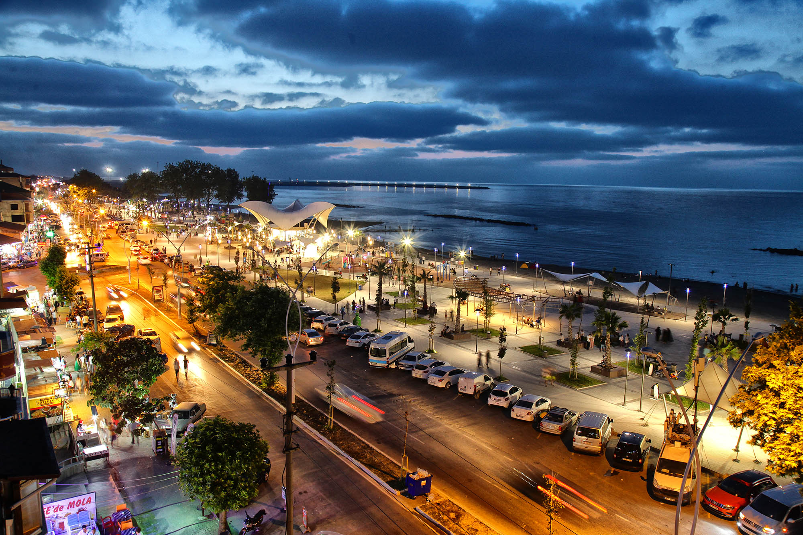
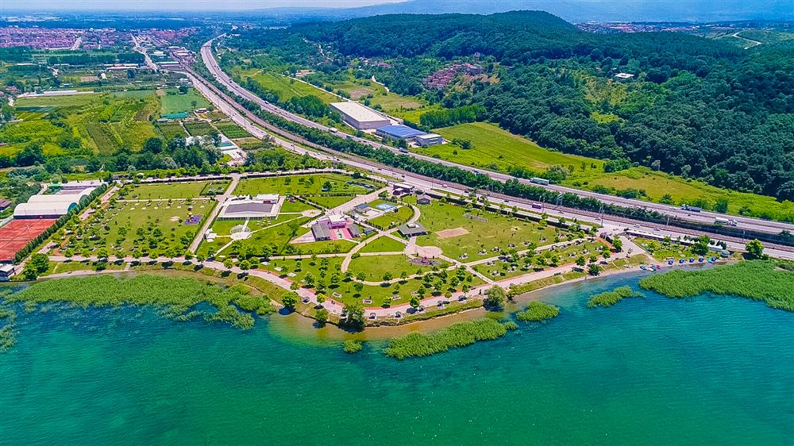
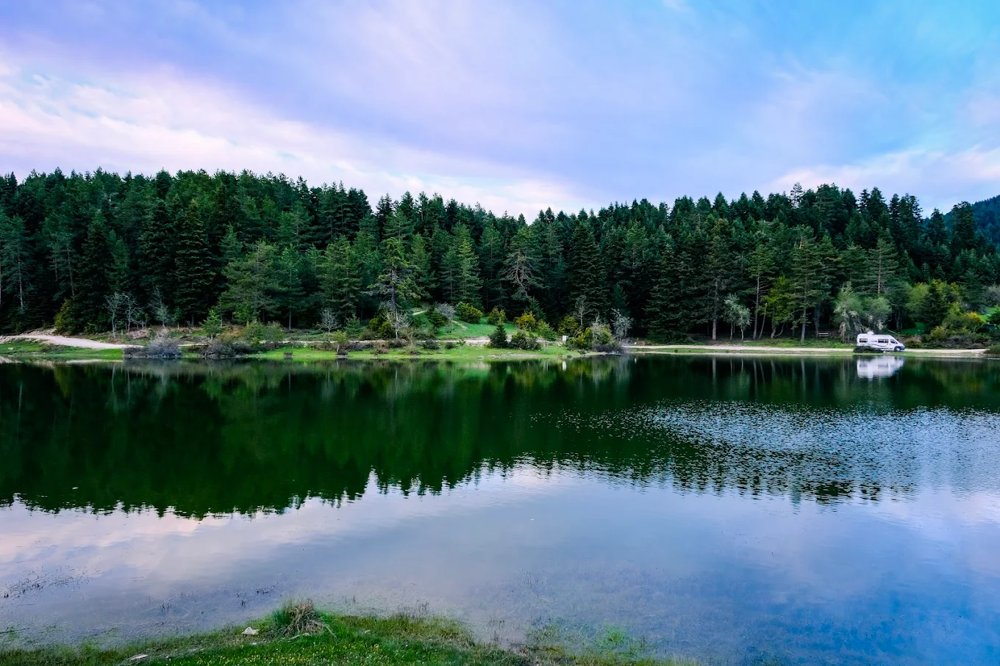
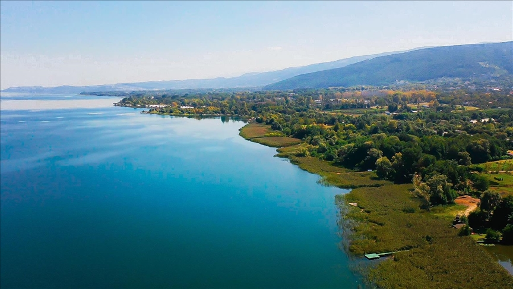
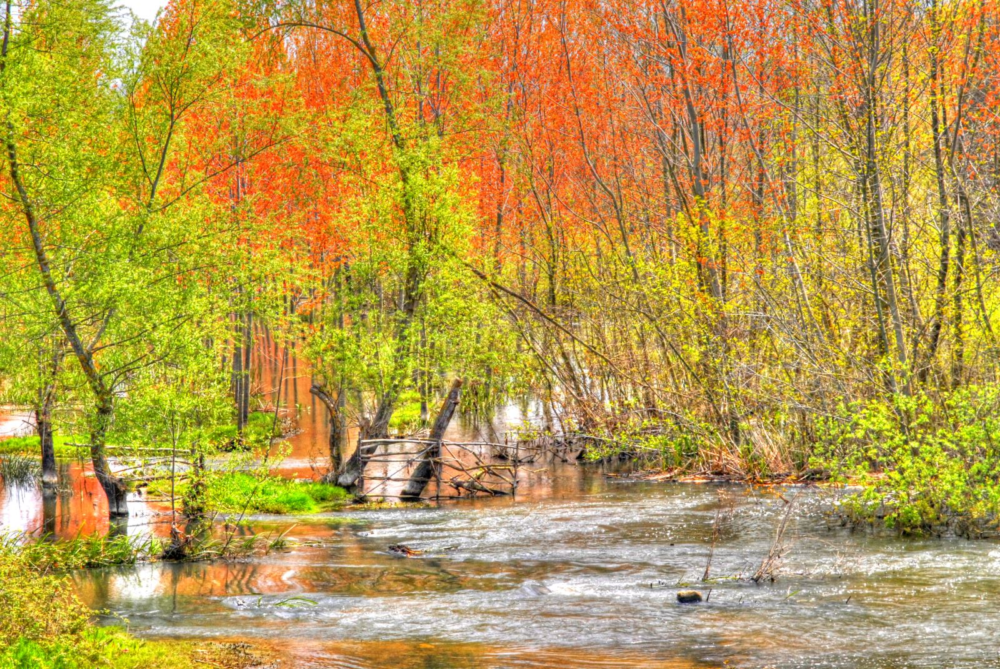
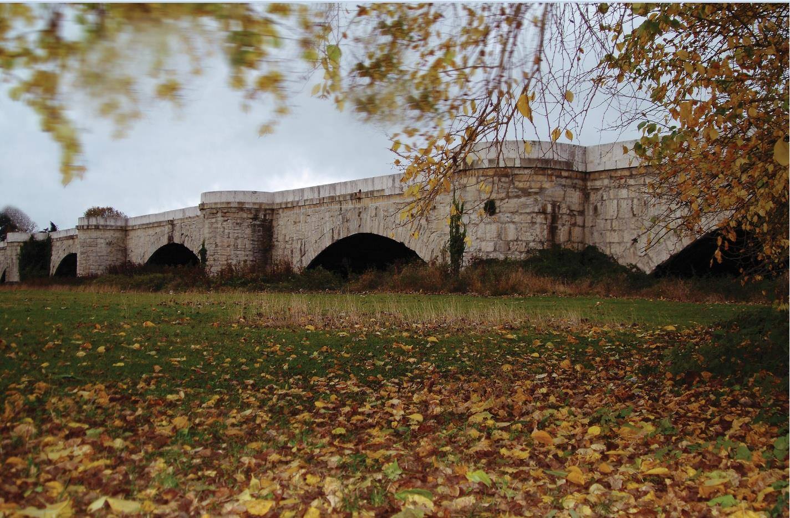

Sakarya Hakkında
Sakarya, Türkiye'nin kuzeybatısında, Marmara Bölgesi'nde yer alan bir şehirdir. Doğusunda Düzce, batısında Kocaeli, güneyinde Bilecik ve Bursa, kuzeyinde ise Karadeniz ile komşudur. Coğrafi konumu sayesinde hem sanayi hem de turizm açısından önemli bir konuma sahiptir.
Yaklaşık 1.1 milyon nüfusu ile bölgenin gelişen şehirlerinden biri olan Sakarya, son yıllarda hızlı bir büyüme göstermiş ve modern bir şehir görünümü kazanmıştır. Şehir merkezi Adapazarı ilçesinde yer almakta olup, 16 ilçeden oluşmaktadır.
Doğal güzellikler açısından oldukça zengin olan Sakarya; Sapanca Gölü, Poyrazlar Gölü, Acarlar Longozu ve Maşukiye gibi görülmeye değer noktalara ev sahipliği yapmaktadır. Yaylaları, ormanları ve akarsuları ile doğaseverler için adeta bir cennettir. Dört mevsim canlılığını koruyan şehir, hem yaz aylarında serinlemek hem de kış aylarında huzur bulmak isteyenler için ideal bir rotadır.
Tarihi zenginlikleri açısından da önemli bir geçmişe sahip olan Sakarya, Roma, Bizans ve Osmanlı dönemlerinden kalma pek çok esere ev sahipliği yapmaktadır. 1500 yıllık Justinianus Köprüsü, bölgenin tarihi derinliğinin en güzel kanıtlarından biridir. Ayrıca Sakarya Üniversitesi, şehirdeki eğitim ve bilim hayatının merkezi olup, Türkiye'nin köklü devlet üniversitelerinden biri olarak Esentepe Kampüsü'nde binlerce öğrenciye ev sahipliği yapmaktadır.
Şehirden Kareler

Karasu

Gölbaşı Parkı

Karagöl Yaylası

Sapanca Gölü

Acarlar Longozu

Poyrazlar Gölü

Justinianus Köprüsü
Gezilecek Yerler
Sapanca Gölü
Marmara'nın en temiz göllerinden biri. Doğa yürüyüşü ve gün batımı manzarası için ideal.
Acarlar Longozu
Türkiye'nin en büyük longoz ormanlarından biri. Su kanalları arasında tekne turu yapılabilir.
Justinianus Köprüsü
1500 yıllık Bizans dönemi köprüsü. Tarihe adım atmak isteyenlerin mutlaka görmesi gereken bir eser.